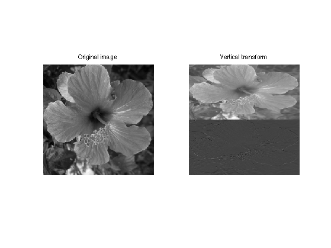
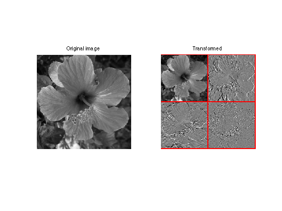
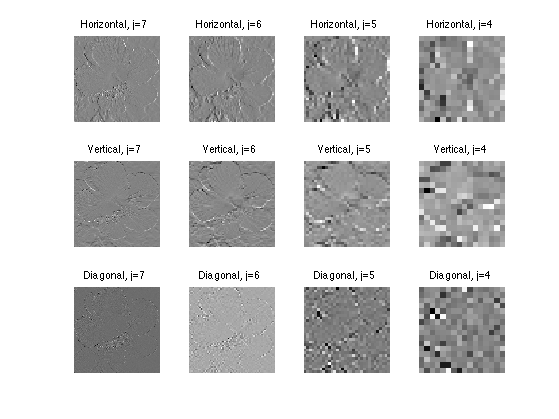
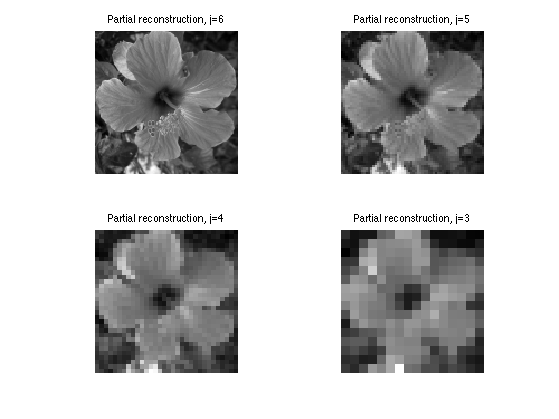
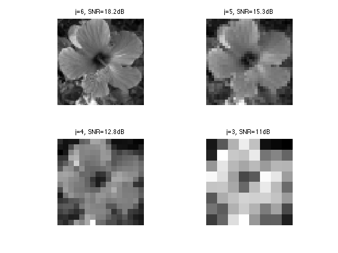
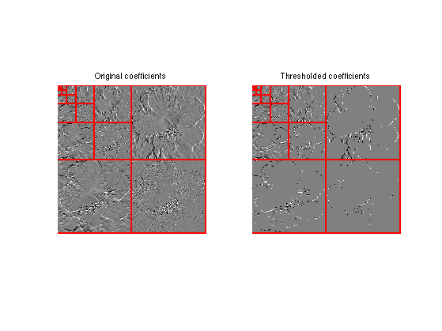
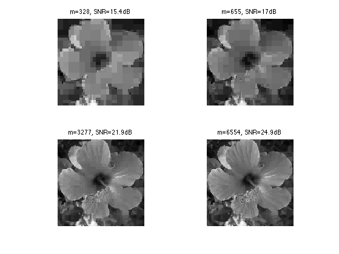

2-D Haar Wavelets
This numerical tour explores 2-D multiresolution analysis with the Haar transform. It was introduced in 1910 by Haar [Haar1910] and is arguably the first example of wavelet basis.
Contents
Installing toolboxes and setting up the path.
You need to download the following files: signal toolbox and general toolbox.
You need to unzip these toolboxes in your working directory, so that you have toolbox_signal and toolbox_general in your directory.
For Scilab user: you must replace the Matlab comment '%' by its Scilab counterpart '//'.
Recommandation: You should create a text file named for instance numericaltour.sce (in Scilab) or numericaltour.m (in Matlab) to write all the Scilab/Matlab command you want to execute. Then, simply run exec('numericaltour.sce'); (in Scilab) or numericaltour; (in Matlab) to run the commands.
Execute this line only if you are using Matlab.
getd = @(p)path(p,path); % scilab users must *not* execute this
Then you can add the toolboxes to the path.
getd('toolbox_signal/'); getd('toolbox_general/');
Forward 2-D Haar transform
The Haar transform is the simplest orthogonal wavelet transform. It is computed by iterating difference and averaging between odd and even samples of the signal. Since we are in 2-D, we need to compute the average and difference in the horizontal and then in the vertical direction (or in the reverse order, it does not mind).
Size \(N=n \times n\) of the image.
n = 256; N = n*n;
First we load an image.
name = 'hibiscus';
f = load_image(name,n);
f = rescale( sum(f,3) );
The Haar transform operates over \(J = \log_2(n)-1\) scales. It computes a series of coarse scale and fine scale coefficients \(a_j, d_j^H, d_j^V, d_j^D \in \RR^{n_j \times n_j}\) where \(N_j=2^j\).
J = log2(n)-1;
The forward Haar transform computes \[ \Hh(f) = (d_j^\om)_{j=0,\ldots,J}^{\om=H,V,D} \cup \{a_0\} . \] Note that the set of coarse scale coefficients \((a_j)_{j>0}\) are not stored.
This transform is orthogonal, meaning \( \Hh \circ \Hh^* = \text{Id} \), and that there is the following conservation of energy \[ \sum_i \abs{f_i}^2 = \norm{f}^2 = \norm{\Hh f}^2 = \sum_{j,\om} \norm{d_j^\om}^2 + \abs{a_0}^2. \]
One initilizes the algorithm with \(a_{J+1}=f\).
The first step apply a vertical transformtion, which corresponds to applying a 1-D Haar transform on each column, i.e. it computes \(\tilde d_{j},\tilde a_j\) from \(a_{j+1}\) as, for all \(\ell=0,\ldots,2^{j+1}-1\) and \(k=0,\ldots,2^j-1\), \[ \tilde a_j[k,\ell] = \frac{a_{j+1}[2k,\ell] + a_{j+1}[2k+1,\ell]}{\sqrt{2}} \qandq \tilde d_j[k,\ell] = \frac{a_{j+1}[2k,\ell] - a_{j+1}[2k+1,\ell]}{\sqrt{2}}. \]
Shortcut to compute \(\tilde a_j, \tilde d_j\) from \(a_{j+1}\).
haarV = @(a)[ a(1:2:length(a),:) + a(2:2:length(a),:);
a(1:2:length(a),:) - a(2:2:length(a),:) ]/sqrt(2);
Display the result of the vertical transform.
clf; imageplot(f,'Original image',1,2,1); imageplot(haarV(f),'Vertical transform',1,2,2);
One then apply the same 1-D horizontal transform to both \(\tilde a_j, \tilde d_j\) to obtain the resulting matrices at scale \(j\), i.e. to compute \(a_j,d_j^H,d_j^V,d_j^D\) as, for all \(\ell, k =0,\ldots,2^j-1\), \[ a_j[k,\ell] = \frac{\tilde a_{j}[k,2\ell] + \tilde a_{j}[k,2\ell+1]}{\sqrt{2}} \qandq d_j^H[k,\ell] = \frac{\tilde a_{j}[k,2\ell] - \tilde a_{j}[k,2\ell+1]}{\sqrt{2}}. \] \[ d_j^V[k,\ell] = \frac{\tilde d_{j}[k,2\ell] + \tilde d_{j}[k,2\ell+1]}{\sqrt{2}} \qandq d_j^D[k,\ell] = \frac{\tilde d_{j}[k,2\ell] - \tilde d_{j}[k,2\ell+1]}{\sqrt{2}}. \]
Shortcut for the vertical transform.
haarH = @(a)haarV(a')';
Shortcut for one step of Haar transform.
haar = @(a)haarH(haarV(a));
Display the result of the first step of the algorithm.
clf; imageplot(f,'Original image',1,2,1); subplot(1,2,2); plot_wavelet(haar(f),log2(n)-1); title('Transformed');
The output of the forward transform is stored in the variable fw. At a given iteration indexed by a scale j, it will store in fw(1:2^(j+1),1:2^(j+1)) the variable \(a_{j+1}\).
Initializes the algorithm at scale \(j=J\).
j = J;
Initialize fw to the full signal.
fw = f;
At iteration indexed by \(j\), select the sub-part of the signal containing \(a_{j+1}\), and apply it the Haar operator.
fw(1:2^(j+1),1:2^(j+1)) = haar(fw(1:2^(j+1),1:2^(j+1)));
Exercice 1: (check the solution) Implement a full wavelet transform that extract iteratively wavelet coefficients, by repeating these steps. Take care of choosing the correct number of steps.
exo1;
Check that the transform is orthogonal, which means that the energy of the coefficient is the same as the energy of the signal.
fprintf('Should be 0: %.3f.\n', (norm(f(:))-norm(fw(:)))/norm(f(:)));
Should be 0: 0.000.
Display the wavelet coefficients.
clf; subplot(1,2,1); imageplot(f); title('Original'); subplot(1,2,2); plot_wavelet(fw, 1); title('Transformed');

Inverse 2-D Haar transform.
The backward transform computes a signal \(f_1 = \Hh^*(h)\) from a set of coefficients \( h = (d_j^\om)_{j,\om} \cup \{a_0\} \)
If \(h = \Hh(f)\) are the coefficients of an image \(f\), one recovers \( f_1 = f \).
The inverse transform starts from \(j=0\), and computes \(a_{j+1}\) from the knowledge of \(a_j,d_j\) by first inverting the horizontal transform, for all \(k,\ell = 0,\ldots,2^j-1\), \[ \tilde a_{j}[k,2\ell] = \frac{ a_j[k,\ell] + a_j^H[k,\ell] }{\sqrt{2}} \qandq \tilde a_{j}[k,2\ell+1] = \frac{ a_j[k,\ell] - a_j^H[k,\ell] }{\sqrt{2}} \] \[ \tilde d_{j}[k,2\ell] = \frac{ d_j^V[k,\ell] + d_j^D[k,\ell] }{\sqrt{2}} \qandq \tilde d_{j}[k,2\ell+1] = \frac{ d_j^V[k,\ell] - d_j^D[k,\ell] }{\sqrt{2}}. \]
ihaarV = @(a,d)assign( zeros(2*size(a,1),size(a,2)), ...
[1:2:2*size(a,1), 2:2:2*size(a,1)], [a+d; a-d]/sqrt(2), 1 );
Then one invert the vertical transform, for all \(k = 0,\ldots,2^j-1\) and for all \(\ell=0,\ldots,2^{j+1}-1\) \[ a_{j}[2k,\ell] = \frac{ \tilde a_j[k,\ell] + \tilde d_j[k,\ell] }{\sqrt{2}} \qandq a_{j}[2k+1,\ell] = \frac{ \tilde a_j[k,\ell] - \tilde d_j[k,\ell] }{\sqrt{2}} \]
ihaarH = @(a,d)ihaarV(a',d')';
Shortcut to invert horizontal and then vertical transforms. This defines the invert of the Haar transform.
ihaar = @(a,dH,dV,dD)ihaarV( ihaarH(a,dH), ihaarH(dV,dD) );
Initialize the signal to recover \(f_1\) as the transformed coefficient, and select the smallest possible scale \(j=0\).
f1 = fw; j = 0;
Apply one step of inverse transform.
s = 1:2^j; t = 2^j+1:2^(j+1); u = 1:2^(j+1); f1(u,u) = ihaar(f1(s,s),f1(s,t),f1(t,s),f1(t,t));
Exercice 2: (check the solution) Write the inverse wavelet transform that computes \(f_1\) from coefficients fW.
exo2;
Check that we recover exactly the original image.
fprintf('Should be 0: %.3f.\n', (norm(f-f1))/norm(f));
Should be 0: 0.000.
Haar Linear Approximation
Linear approximation is obtained by setting to zeros the Haar coefficient coefficients above a certain scale \(j\).
Cut-off scale.
j = J-1;
Set to zero fine scale coefficients.
fw1 = zeros(n); fw1(1:2^j,1:2^j) = fw(1:2^j,1:2^j);
Computing the signal \(f_1\) corresponding to these coefficients fw1 computes the orthogonal projection on the space of images that are constant on disjoint squares of length \(N/2^j \times N/2^j\).
Exercice 3: (check the solution) Display the reconstructed signal obtained from fw1, for a decreasing cut-off scale \(j\).
exo3;
Haar Non-linear Approximation
Non-linear approximation is obtained by thresholding low amplitude wavelet coefficients. It is defined as \[ f_T = \Hh^* \circ S_T \circ \Hh(f) \] where \(S_T\) is the hard tresholding operator \[ S_T(x)_i = \choice{ x_i \qifq \abs{x_i}>T, \\ 0 \quad \text{otherwise}. }. \]
S = @(x,T) x .* (abs(x)>T);
Set the threshold value.
T = .1;
Threshold the coefficients.
fwT = S(fw,T);
Display the coefficients before and after thresholding.
clf; subplot(1,2,1); plot_wavelet(fw); axis('tight'); title('Original coefficients'); subplot(1,2,2); plot_wavelet(fwT); axis('tight'); title('Thresholded coefficients');
Exercice 4: (check the solution) Find the threshold \(T\) so that the number of remaining coefficients in fwT is a fixed number \(m\). Use this threshold to compute fwT and then display the corresponding approximation \(f_1\) of \(f\). Try for an increasing number \(m\) of coeffiients.
exo4;
Bibliography
- [Haar1910] Haar A. Zur Theorie der orthogonalen Funktionensysteme, Mathematische Annalen, 69, pp 331-371, 1910.